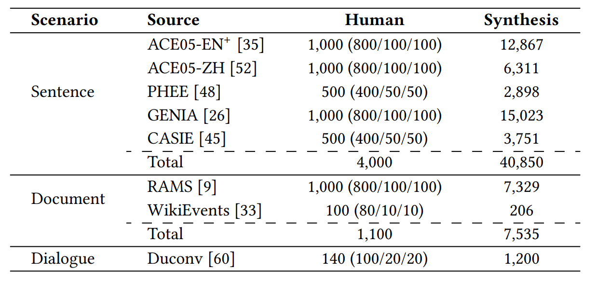

Event extraction (EE) is a critical direction in the field of information extraction, laying an important foundation for the construction of structured knowledge bases. EE from text has received ample research and attention for years, yet there can be numerous real-world applications that require direct information acquisition from speech signals, online meeting minutes, interview summaries, press releases, etc. While EE from speech has remained under-explored, this paper fills the gap by pioneering a SpeechEE, defined as detecting the event predicates and arguments from a given audio speech. To benchmark the SpeechEE task, we first construct a large-scale high-quality dataset. Based on textual EE datasets under the sentence, document, and dialogue scenarios, we convert texts into speeches through both manual real-person narration and automatic synthesis, empowering the data with diverse scenarios, languages, domains, ambiences, and speaker styles. Further, to effectively address the key challenges in the task, we tailor an E2E SpeechEE system based on the encoder-decoder architecture, where a novel Shrinking Unit module and a retrieval-aided decoding mechanism are devised. Extensive experimental results on all SpeechEE subsets demonstrate the efficacy of the proposed model, offering a strong baseline for the task. At last, being the first work on this topic, we shed light on key directions for future research.
We proposed a novel large-scale benchmark dataset for the SpeechEE task, sourced from eight classical text event extraction datasets that are widely used and adhere to strict standards. The dataset was constructed through both manual recording and system synthesis methods, resulting in a large-scale, high-quality benchmark dataset that spans multiple scenarios, domains, languages, styles, and backgrounds, as illustrated in Figure 1.
Figure 1: Key characteristics of our SpeechEE dataset.
Due to the strict environmental requirements and high costs associated with manually recording speech data, we supplemented the manually recorded speech dataset by leveraging existing high-quality open-source Text-to-Speech (TTS) frameworks, such as Bark and edge-tts, to augment the training data. This approach involved synthesizing speech data based on textual event extraction datasets. Finally, the manually recorded and system-synthesized speech data underwent post-processing screening and cross-validation to ensure strict quality control. As a result, a large-scale SpeechEE benchmark dataset was created, as shown in Figure 2. This benchmark dataset provides robust support for evaluating the performance of SpeechEE models.
Figure 2: Statistics of the SpeechEE dataset. In the brackets are the splits of train/develop/test sets.
We introduce two methods to address SpeechEE, including pipeline SpeechEE and E2E SpeechEE. The pipeline SpeechEE is a two-step method that firstly uses ASR system to obtain the transcripts of input speech and then uses textual EE model to extract event records from transcripts. We then propose an E2E SpeechEE model to extract the event records from speech in one shot. Two SpeechEE architectures are overviewed in Figure 3.
Figure 3: The architecture of the pipeline and E2E SpeechEE model.
The pipeline approach divides the speech event extraction task into two subtasks: ASR (Automatic Speech Recognition) and textual event extraction.
We suggested a direct and practical implementation by using the high-performance Whisper model as the ASR model to convert audio into corresponding transcripts, followed by the Text2Event method, which is a sequence-to-structure model for textual event extraction.
These two well-performing existing models are combined in a two-stage pipeline model, as illustrated in Figure 3 (a).
The pipeline method inevitably suffers from issues like error propagation, so we innovatively proposed the E2E SpeechEE model, as illustrated in Figure 3 (b).
Overall, the E2E SpeechEE model adopts an encoder-decoder architecture composed of three main components: a speech encoder, the Shrinking Unit module, and a retrieval-enhanced text decoder.
Finally, we provide a more intuitive understanding of the differences in performance between our pipeline and E2E systems on specific instances by offering some qualitative case studies.
We select two samples from the sentence-level dataset, where our E2E model correctly produced outputs that matched the gold events for both instances.
However, the pipeline model fails in both cases, demonstrating typical errors, as shown in Figure 4.
Figure 4: Qualitative examples of pipeline method and E2E method.